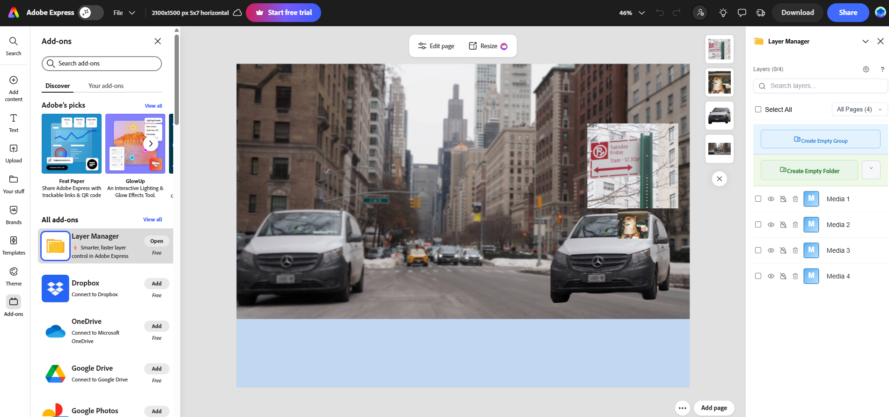

This photomontage represents how distractions in everyday life have become normalized to the point where even the absurd can go unnoticed. In the image, a Shiba Inu is shown driving a van nearly identical to the one on the left side of the street. The dog is positioned directly beneath a parking sign, subtly suggesting a violation of rules and social expectations. The humor and impossibility of the scene are intentional. By inserting something clearly out of place into an otherwise ordinary city environment, I wanted to question how much we truly observe the world around us. The familiar repetition of the vans reinforces the idea that unusual behavior can blend into routine surroundings when we are not paying attention.
I blurred the background to emphasize emotional and psychological detachment. While something bizarre is happening in the foreground, the city remains out of focus and continues moving forward, symbolizing how life goes on regardless of what is happening around us. This reflects how overstimulation, constant media consumption, and digital distraction have dulled our awareness. We are often so absorbed in our own screens, schedules, and internal noise that even something clearly wrong or unusual might be overlooked. Through masking and layered compositing, I constructed a scene that feels believable at first glance but becomes unsettling upon closer inspection, reinforcing the idea that distraction has become part of modern normalcy.